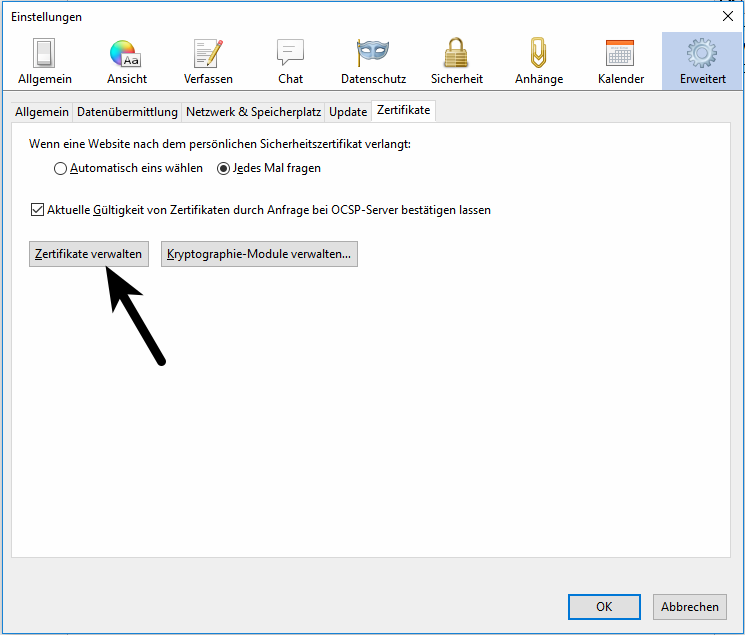

eBlocker Help > FAQs > HTTPS Funktion (SSL/HTTPS)
Das eBlocker Zertifikat in Thunderbird hinterlegen.
Mit nur wenigen Schritten haben Sie das Zertifikat hinterlegt.
- Klicken Sie auf der HTTPS Konfigurationsseite auf den Reiter ZERTIFIKAT.
- Nun klicken Sie auf den Button HERUNTERLADEN. Gegebenenfalls kann man das Zertifikat auch mit einem Rechtsklick auf den Button und dann Speichern unter herunterladen.
- Rufen Sie in Thunderbird das Menü Einstellungen auf.

- Wählen Sie Erweitert aus und im Reiter Zertifikate klicken Sie bitte auf Zertifikate verwalten.

- Es öffnet sich die Zertifikatverwaltung. Dort klicken Sie bitte im Reiter Zertifizierungsstellen auf Importieren und wählen anschließend das eBlocker-Zertifikat aus dem Download-Verzeichnis aus.

- Laden Sie das eBlocker-Zertifikat mit Öffnen und stellen Sie sicher, dass im folgenden Dialog die erste Checkbox "Dieser CA vertrauen, um Websites zu identifizieren" ausgewählt ist und bestätigen Sie mit OK.

- Klicken Sie nun im Zertifikat-Manager auf OK und bestätigen die Einstellungen ebenfalls mit OK.
Das Zertifikat ist nun im Thunderbird E-Mail-Programm hinterlegt.